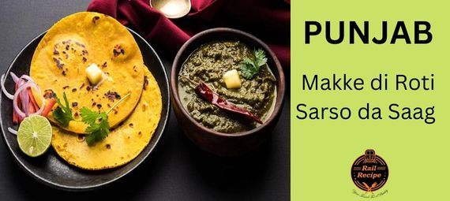
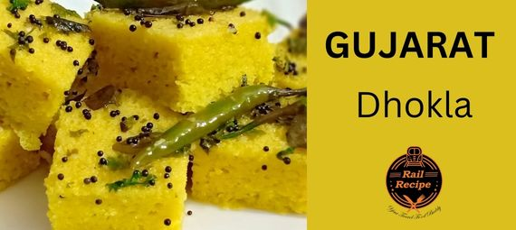

Cuisines
Punjab – Makke di Roti and Sarso da Saag

If we talk about Punjab then authentic Punjabi cuisines are the first thing that strikes our mind due to their delicious taste. Punjab is popular because of its tourist places, history, culture, and food. Punjabi people love many dishes but one of the most popular regional cuisines is Makke Di Roti and Sarso Da Saag.
West Bengal –Kosha Mangsho
Kosha Mangsho is also called Bengali mutton curry and it is one of the most popular Bengali cuisines due to its delicious taste juicy mutton pieces and different flavors of hot spices.
Maharastra –Misal Pav
You often heard that Maharashtrian people love Vada Pav but apart from that one of the most popular all-time favorite Maharashtrian cuisine is Misal Pav. It is a kind of Maharashtrian curry consisting of sprouts, topped with onions and Farsan.
Assam –Papaya Khar
Assamese recipes are totally incomplete without “Khar” because it is very famous in Assam. Khar is basically an exotic liquid strained from sun-dried banana skin and cooked with seasonal vegetables like papaya, potatoes, etc.
Tamil Nadu –Rasam
If we talk about South-Indian cuisines then “Rasam” needs no introduction due to its tangy taste and spicy flavors of ground spices. Rasam is prepared in many South-Indian households and served with hot steamed rice that tastes delicious. It is a soupy curry made with different herbs, lentils, veggies/fruits, and tamarind. Traditional south-Indian cuisines are totally incomplete without rasam.
Bihar – Litti Chokha
If you talk about Bihar then “Litti-Chokha” needs no introduction because it is the most loved cuisine in Bihar, especially on the Bhojpur side of Bihar. In this cuisine, Litti is the stuffed whole wheat dough ball and Chokha is a mashed relish made with roasted eggplant, tomato, and boiled potatoes with some green.
Andhra Pradesh –Kodi Pulao
Rice is a staple food of Andhra Pradesh. Kodi Pulao is one of the most special cuisines of Andhra Pradesh due to its spicy blend of rice and meat. This special pulao is simmered in different spices and herb-infused milk that gives a unique taste and flavor.
Telangana –Hyderabadi Biryani
Biryani is known as the “food of the god” due to its huge fan following all over the world. It is an evergreen classic cuisine that really needs no introduction. If we talk about biryani then, how can we forget Hyderabadi Biryani? It is one of the most popular cuisines in Telangana due to the aromatic flavor of spices and the good color of saffron.
Gujarat –Dhokla

Gujarati foods are very famous due to their unique flavors, tempting colors, and sweet tinge that comes after taking a bite of Gujarati food. Gujrat is popular for many dishes like Khandvi, Fafda Jalebi, Thepla, dal Dhokli, etc, but one of the most famous cuisines in Gujrat is “Dhokla”.
Uttarakhand – Kafuli
Kafuli is a very popular Pahadi dish from Uttarakhand. It is a kind of spinach curry that is often served with steamed rice and chapattis. Kafuli is very beneficial for our overall health due to the presence of spinach which contains a huge amount of nutrition. The main ingredients of Kafuli are spinach, fenugreek, garlic, green chilies, and curd and rice paste. This unique curry tastes delicious when served hot.
Himachal Pradesh – Dhaam
If you want to enjoy the traditional and pure taste of Himachal-Pradesh then you should try Dhaam because it is a plate full of Himachali cuisines that tastes amazingly delicious.
Goa – Fish Curry
.jpg)
Goa is all about overwhelming beaches, architectural wonders like old Goa churches, and delicious sea foods. Fish Curry is most of the most loved cuisine in Goa that tastes super delicious and rich due to the unique flavors of different spices. Goa is a beachside place where fish dishes and sea foods are common cuisines.